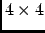

Next: Solution of the minimization
Up: Theory and implementation
Previous: Optimal superposition.
Contents
The rotational minimization problem can be elegantly solved by using quaternion algebra.
Quaternions are so-called hypercomplex numbers, having a real unit, , and three imaginary units,
 , , and . Since
(cyclic), quaternion multiplication is not commutative.
A possible matrix representation of an arbitrary quaternion,
, , and . Since
(cyclic), quaternion multiplication is not commutative.
A possible matrix representation of an arbitrary quaternion,
reads
The components are real numbers. Similarly as normal complex numbers allow one to represent rotations in a plane, quaternions
allow one to represent rotations in space. Consider the quaternion representation of a vector  , which is given by
, which is given by
and perform the operation
where is a normalized quaternion,
The symbol stands for `trace'. We note that a normalized quaternion is represented by an orthogonal 
matrix. may then be written as
where the components  , abbreviated as , are given by
, abbreviated as , are given by
The matrix
is the rotation matrix defined in
(4.52).
Next: Solution of the minimization
Up: Theory and implementation
Previous: Optimal superposition.
Contents
pellegrini eric
2009-10-06